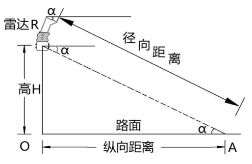

安装雷达
- 使用螺丝钉将万向节安装到雷达背面。
- 使用抱箍将万向节固定到横杆上，如图1所示。
推荐使用抱装支架。可将万向节安装到抱装支架上，再将抱装支架固定到横杆上。
轻微旋转雷达的左右两侧，使雷达正对检测区域的中心，再扣紧抱箍。
- 拧松万向节两侧的调节螺栓，轻微上抬或者下压雷达，调整雷达处于水平状态。如果现场无水平或角度调节设备，可通过手机应用辅助调节。在手机上打开角度测量类应用，依次紧贴雷达背面三个不同的位置，如图2所示。当角度为0时，雷达处于水平状态。
- 根据雷达的安装高度和探测方向，轻微上抬或者下压雷达，调整雷达俯仰角度α后再拧紧螺栓。
雷达俯仰角度α，也可通过手机应用辅助调节，请参见3。当安装高度6m左右时：
- 检测来向车辆，推荐向下倾斜2°～3°。
- 检测去向车辆，推荐向下倾斜4°～5°。
- 正顶装安装，水平角度不倾斜。
图3 雷达倾角α示意

雷达的检测范围为30~250米，安装时需要在上位机观察车辆最远的跟踪距离有没有达到250米。照射范围无遮挡弯道的情况下，如果有大量车辆提前消失，可能是因为雷达照射角度偏低。
- 分别连接雷达电源线、网口，接线说明请参见表1。
表1 线缆接线说明 线标或接口
引线颜色
接线说明
电源线
红色
连接DC 12V电源正极。
黑色
连接DC 12V电源负极。
绿色
雷达接地线，通常不连接。
棕色
连接外部设备的RS485接口A端，请勿连接。
白色
连接外部设备的RS485接口B端，请勿连接。
网口
RJ45接口
连接通用机柜中交换机，通过交换机接入ITS800。
电源线、网线需穿入波纹管。现场需自备波纹管，并尽可能多的包裹住所有的线缆，如图4所示。